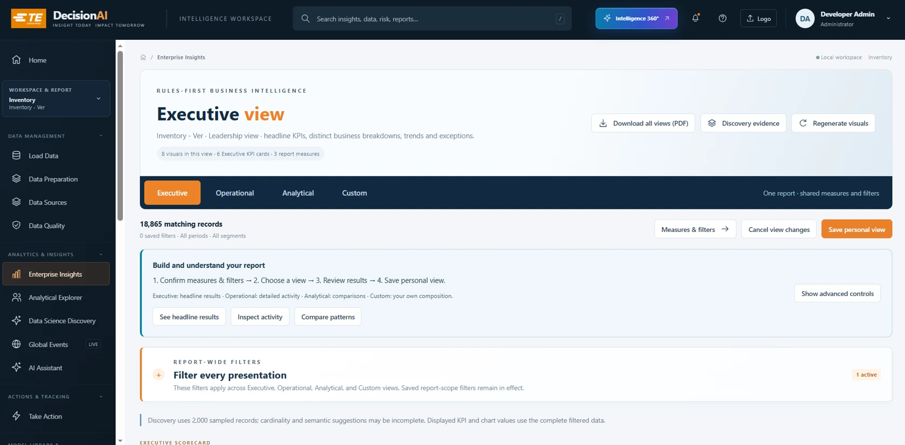
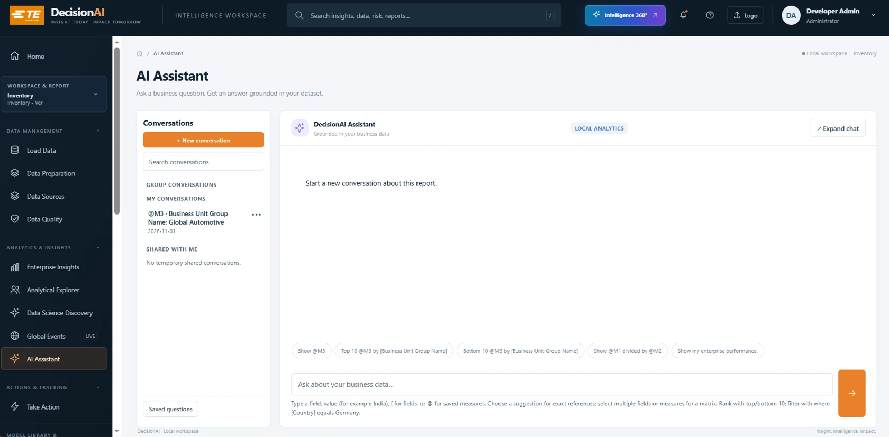
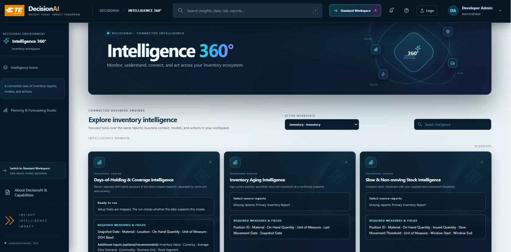
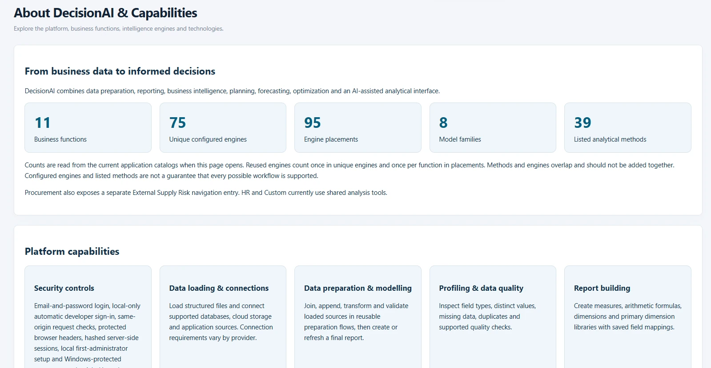

Strategy
Identify the business opportunity and prioritize work by potential value, feasibility and organizational readiness.
Strategic Innovation & Digital Transformation Leader
15+ years of experience driving digital transformation, enterprise analytics, AI innovation, and business performance across global organizations.
KPI scope includes Procurement, Supply Chain, and New Product Introduction.
THE CONTRIBUTION I WOULD BRING
I would bring 15+ years of experience connecting business processes, people, data and technology, helping translate strategic challenges into prioritized initiatives, accountable execution and measurable outcomes.
Define the business problem and the future opportunity.
Weigh impact, feasibility, dependencies and readiness.
Align people, processes, technology and governance.
Measure outcomes and build lasting capabilities.
Career journey
Five career chapters across financial analytics, supply chain, global automotive business and corporate transformation.
Led enterprise-wide digital transformation, data governance, and decision intelligence for Global Procurement, defining a three-year strategic roadmap, driving innovation, and scaling digital adoption across global business units.
Led reporting and digital application operating models across Global Automotive and Transportation Solutions, aligning business units, standardizing processes, and delivering tailored applications and automated workflows.
Established foundations for business intelligence and digital innovation, consolidating analytics requirements, standardizing reporting, and developing Power BI dashboards and Power Apps for Automotive EMEA.
Strengthened supply chain performance at Target Corporation through inventory optimization, demand forecasting, distribution cost analysis, and data-driven operational improvements.
Built a foundation in financial analytics at Ernst & Young, supporting financial performance reporting, billing reconciliation, cost analysis, and compliance controls.
Leadership philosophy
I set a clear direction, give teams ownership and focus on how they will adopt and sustain the change.
Identify the business opportunity and prioritize work by potential value, feasibility and organizational readiness.
Challenge assumptions, explore alternatives and use digital tools or AI where they improve the decision or workflow.
Set direction, give people ownership and encourage collaboration across functions.
Build reusable capabilities with common definitions, clear governance and business ownership.
Set targets and measure adoption and outcomes so teams can see whether a change is delivering value.
Connect people, processes and technology, then refine delivered solutions as business needs evolve.
Featured projects
Selected work in self-service analytics, supply-chain risk and supplier intelligence.

AI & Innovation
Self-service decision intelligence for business users, from data exploration to scenario evaluation.
Independent development
Explore Case StudyStrategic Risk & Supply Chain
A framework for estimating tariff exposure and comparing mitigation scenarios.
Explore Case StudyProcurement Transformation
Connected supplier performance, risk and recommended actions in one decision-support framework.
Explore Case StudyExecutive capabilities
Future vision
Business teams can use analysis to anticipate problems, compare options and act with greater independence.
DECISIONAI IN PRACTICE
Business users can explore their own data and decide what to do next, regardless of their technical or analytics background.
Today, business and functional teams often work across separate tools for reporting, analysis and decision support. Moving from a question to a decision can mean stitching together reports and asking a technical or central analytics team to run each new analysis. DecisionAI brings business domains into one workspace so teams can turn data into insights, use those insights to make decisions, and act on what they learn.
Independent development. Capabilities are at varying stages of development and validation. The screenshots and catalogue tiles show the configuration at the time of capture.
The supplied executive-view screen shows reporting views, shared measures and filters, and a guided report workflow.
The assistant interface offers dataset-oriented questions, saved conversations and suggested prompts. This snapshot does not show a generated answer.

Intelligence 360° brings together business and functional analysis engines, with readiness checks and source-data requirements. The screenshot shows an inventory example within this broader capability.

The catalogue lists business-function entries and configured engine counts. Listed engines are not evidence of completed enterprise deployments.
Readable transcription of the supplied prototype catalogue. Counts reflect listed configuration; availability and input requirements vary by workflow.
The analytical model catalogue lists statistical analysis alongside diagnostic and predictive analytics, anomaly and risk, segmentation, optimization, simulation and scenario analysis, and decision models. Method availability and input requirements are defined within each workflow.
Readable transcription of the supplied prototype catalogue. Counts reflect listed configuration; availability and input requirements vary by workflow.
The application’s capabilities page describes data preparation, modelling, quality and reporting. Catalogue counts describe configuration, not validated business outcomes.

PERSONAL EXECUTIVE BRIEF · ENTERPRISE TRANSFORMATION & INNOVATION
Bigger Insights. Stronger Tomorrow.
Strategic Innovation | Business Transformation | Global Operations | Enterprise Analytics | AI & Digital Transformation
Enterprise Strategy & Transformation | Portfolio & Performance Leadership | Digital Innovation & AI | Data & Analytics | Operational Excellence | Enterprise Decision Intelligence
Ph: +919916535330 (India) · Email: KamalChandra05@gmail.com
A BRIEF INTRODUCTION
I am a strategic, innovative and results-driven transformation leader with 15+ years of experience across business strategy, digital transformation, AI and analytics, supply chain and procurement.
Today, I lead Global Operation Digital & Data Analytics at TE Connectivity at the corporate level, working with business and functional leadership to identify transformation opportunities, shape strategic initiatives and translate complex business challenges into scalable, data-driven solutions.
My focus extends beyond technology and analytics to connecting people, processes and business priorities. I believe successful transformation is not simply about implementing solutions, but about aligning stakeholders, enabling change and building capabilities that deliver measurable and sustainable business value.
01 / MY TRANSFORMATION PHILOSOPHY
Transformation begins with understanding the business, questioning existing practices and recognizing opportunities that may not always be obvious.
I believe the best solution is not necessarily the most advanced technology, but the one that creates meaningful business value. This requires challenging assumptions, exploring alternatives, aligning stakeholders and balancing strategic impact with execution feasibility.
For me, transformation does not end with implementation. It succeeds when people adopt the change, capabilities improve and measurable value is sustained.
Discover → Challenge → Reimagine → Prioritize → Execute → Measure → Evolve
02 / THE JOURNEY SO FAR
My professional journey began with Ernst & Young and Target Corporation, building a foundation in financial analytics, supply chain and business operations.
Over 11 years at TE Connectivity, my responsibilities evolved from business analytics and consulting to leading global digital and data analytics capabilities at the corporate level, working across functions, business units and geographies.
What began as solving individual business problems has evolved into connecting strategy, people, processes and technology, establishing enterprise capabilities and enabling more intelligent business decisions.
The evolution: From solving problems to building capabilities. From delivering insights to driving transformation.
03 / ENTERPRISE IMPACT
04 / TRANSFORMATION IN ACTION
05 / HOW I LEAD
I believe leadership begins with creating a clear vision, giving people ownership and building an environment where they can think independently, challenge assumptions and grow beyond their existing capabilities.
My approach combines strategic direction with empowerment and accountability. I encourage collaboration across functions, use data and business judgment to guide decisions, and focus on developing capabilities that continue to deliver value beyond individual contributions.
For me, leadership is not about having all the answers. It is about asking the right questions, bringing people together and enabling them to achieve outcomes they may not have thought possible.
My guiding belief: Create direction. Empower ownership. Build capability. Deliver lasting impact.
06 / DISTINCTIVE CAPABILITIES
Apply experience across unfamiliar contexts. Explore alternatives and evaluate trade-offs using business understanding, analytical thinking and strategic judgment.
Keep improving implemented solutions: simpler, faster, more scalable and more valuable. Assess functional improvements against enterprise needs.
Build capabilities that allow the business to operate and improve independently.
07 / THE NEXT ERA
I believe the next era of business transformation will be defined not by how much data organizations collect or how many reports they produce, but by how effectively they turn intelligence into timely, informed action.
The opportunity is to move beyond traditional reporting and reactive decision-making toward an environment where business teams can anticipate challenges, explore possibilities and make better decisions independently.
Technology and AI will accelerate this shift, but the real transformation lies in empowering people, connecting business intelligence with operational execution and making intelligent decision-making part of everyday work.
The evolution: Reporting → Insights → Prediction → Prescription → Intelligent Action.
08 / DECISIONAI
DecisionAI is an enterprise intelligence platform I independently conceived and began developing to bridge the gap between business questions, analytical insights and informed decisions.
The vision is to empower business and operational teams, regardless of their technical expertise, to independently explore data, understand performance, anticipate risks, evaluate scenarios and identify recommended actions without relying on specialist analytics teams for every question.
By bringing multiple business functions into a unified intelligence environment, DecisionAI aims to transform analytics from a reporting capability into an accessible, proactive decision-support capability.
Intelligence domains: Procurement, Supply Chain, Finance, Sales & Commercial, Risk and Leadership.
The evolution: Data → Insights → Intelligence → Decisions → Action.
09 / FUTURE INNOVATION PORTFOLIO
Project REINVENT: an envisioned AI Business Reinvention Engine to examine operating models, discover capabilities and constraints, and explore AI-native future-state designs.
NEXUS · NEXT · EVOLVE · FORGE: proposed strategic innovation concepts; detailed scope remains to be developed.
Independently conceived future concepts, not completed or TE-sponsored projects.
10 / THE NEXT CHAPTER
My ambition is to contribute at a broader enterprise level, connecting business strategy, operational excellence, digital innovation and people to create meaningful and sustainable change.
I see opportunities to challenge traditional ways of working, identify untapped business potential and build capabilities that strengthen organizational performance, agility and long-term competitiveness.
I am particularly interested in environments where strategic thinking, innovation and execution come together, where I can contribute my experience while continuing to learn, challenge perspectives and create lasting enterprise value.
My focus: Strategic Vision → Transformation → Execution → Value Realization.
11 / THE CONVERSATION AHEAD
I believe the most meaningful opportunities often begin with a simple question: What could we do differently, and what could we achieve together?
Throughout my journey, I have learned that experience is not just about knowing how to solve problems, but about recognizing possibilities, connecting ideas and bringing people together to turn those possibilities into reality.
As I look ahead, I am excited about new challenges, fresh perspectives and opportunities to create something meaningful.
The next chapter is not just about where I go, but about what we can build together.
Kamal Majumder
Bigger Insights. Stronger Tomorrow.
My education provided a foundation in commerce and data science. Over more than 15 years of professional experience, delivering enterprise transformation initiatives and leading teams have shaped my strategic, technical, and leadership expertise.
Bangalore University
SCDL
Contact
Open to senior leadership opportunities where strategy, technology, data, and business transformation come together to create measurable enterprise value.